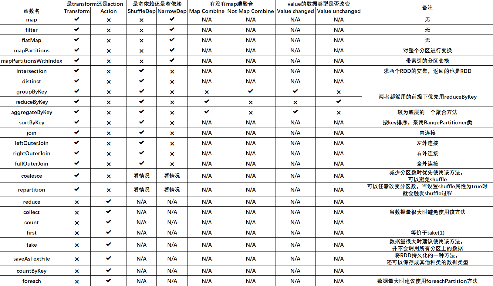
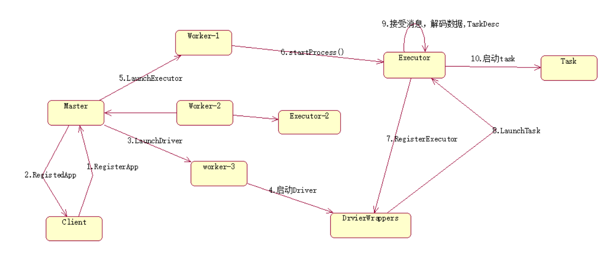
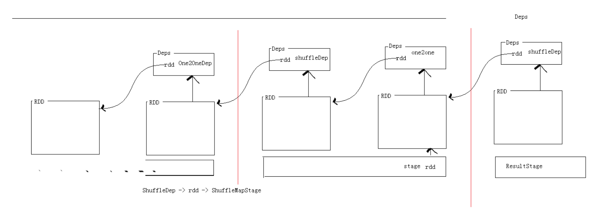
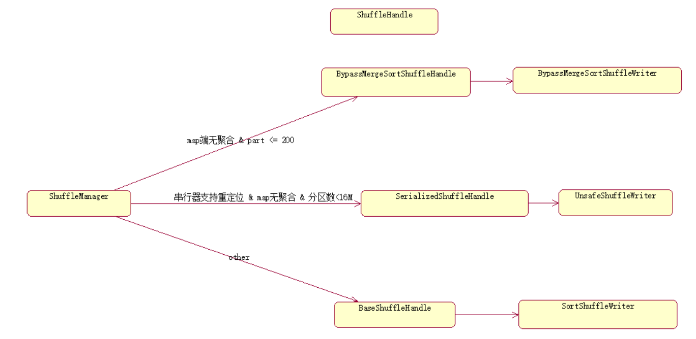
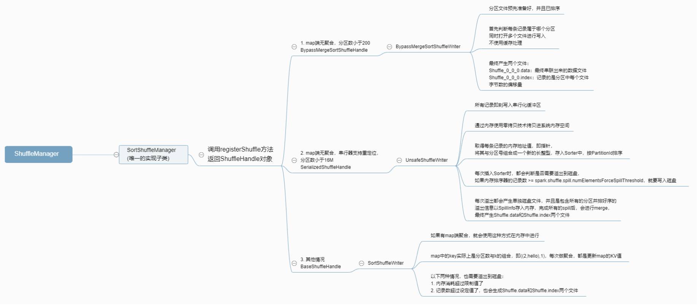

原文连接:https://www.cnblogs.com/w950219/p/12057254.html
Spark工作机制以及API详解
本篇文章将会承接上篇关于如何部署Spark分布式集群的博客，会先对RDD编程中常见的API进行一个整理，接着再结合源代码以及注释详细地解读spark的作业提交流程，调度机制以及shuffle的过程，废话不多说，我们直接开始吧！
1. Spark基本API解读
首先我们写一段简单的进行单词统计的代码，考察其中出现的API，然后做出整理：

import org.apache.spark.SparkConf;
import org.apache.spark.api.java.JavaPairRDD;
import org.apache.spark.api.java.JavaRDD;
import org.apache.spark.api.java.JavaSparkContext;
import org.apache.spark.api.java.function.FlatMapFunction;
import org.apache.spark.api.java.function.Function2;
import org.apache.spark.api.java.function.PairFunction;
import scala.Tuple2;
import java.util.Arrays;
import java.util.Iterator;
import java.util.List;
/*
使用java实现word count
*/
public class WCJava1 {
public static void main(String[] args) {
SparkConf conf = new SparkConf();
conf.setMaster("local");
conf.setAppName("wcjava");
JavaSparkContext jsc = new JavaSparkContext(conf);
//加载文件
JavaRDD<String> rdd1 = jsc.textFile("hdfs://mycluster/wc.txt");
//压扁
JavaRDD<String> rdd2 = rdd1.flatMap(new FlatMapFunction<String, String>() {
public Iterator<String> call(String s) throws Exception {
return Arrays.asList(s.split(" ")).iterator();
}
});
//map
JavaPairRDD<String, Integer> rdd3 = rdd2.mapToPair(new PairFunction<String, String, Integer>() {
public Tuple2<String, Integer> call(String s) throws Exception {
return new Tuple2<String, Integer>(s, 1);
}
});
JavaPairRDD<String, Integer> rdd4 = rdd3.reduceByKey(new Function2<Integer, Integer, Integer>() {
public Integer call(Integer v1, Integer v2) throws Exception {
return v1 + v2;
}
});
List<Tuple2<String, Integer>> list = rdd4.collect();
for (Tuple2<String, Integer> stringIntegerTuple2 : list) {
System.out.println(stringIntegerTuple2);
}
}
}从语法角度来说，scala版的代码比java要简洁的多，但从性能角度来说，java虽然啰嗦，却优于scala，上述代码中，使用到了一些在做RDD变换中经常会用到的API，事实上，这些API可以参考apache的官方文档，可见网址：http://spark.apache.org/docs/latest/rdd-programming-guide.html
1.1 Spark core模块核心概念介绍
RDD：弹性分布式数据集(resilient distributed dataset)
RDD是Spark编程中的一个核心概念，不同于Hadoop的存储在Datanode中的真实数据集，RDD是一个逻辑上的概念，并没有真实的数据，RDD对象一旦创建出来，就是不可变的了，而“分布式”也就意味着这些数据是被分成不同的范围执行并行计算的，下面我们摘录一段scala版RDD的官方文档注释，进行一下解读：
Internally, each RDD is characterized by five main properties:
- A list of partitions
- A function for computing each split
- A list of dependencies on other RDDs
- Optionally, a Partitioner for key-value RDDs (e.g. to say that the RDD is hash-partitioned)
- Optionally, a list of preferred locations to compute each split on (e.g. block locations for
an HDFS file)内部来说，每个RDD都由五个主要特性组成：
1. 分区列表：指的是分区对象中包含的数据的范围
2. 计算每个切片的函数：指的是operator，也就是算子，或者称之为算法
3. 和其他RDD的依赖列表：主要有宽依赖以及窄依赖两种
4. (可选的)KV类型RDD的分区器
5. (可选的)计算每个切片的首选位置列表
Task
任务是Spark中最小的执行单位，RDD的每个分区对应一个task，而每个任务运行在节点上的线程中
依赖(Dependency)
之前说过，依赖分为两种，宽依赖以及窄依赖，
窄依赖：子RDD的每个分区依赖于父RDD的少量分区(不一定是只有一个)
NarrowDependency：本身是一个抽象类，有三个实现子类，OneToOneDependency，PruneDependency以及RangeDependency
宽依赖：子RDD的每个分区依赖于父RDD的所有分区
ShuffleDependency：是Dependency抽象类的实现子类，可以将其称之为shuffle依赖或是宽依赖
1.2 RDD API基本特性总结

关于groupByKey，reduceByKey等聚合方法的总结：
查看groupByKey的scala源码：
def groupByKey(partitioner: Partitioner): RDD[(K, Iterable[V])] = self.withScope {
// groupByKey shouldn't use map side combine because map side combine does not
// reduce the amount of data shuffled and requires all map side data be inserted
// into a hash table, leading to more objects in the old gen.
val createCombiner = (v: V) => CompactBuffer(v)
val mergeValue = (buf: CompactBuffer[V], v: V) => buf += v
val mergeCombiners = (c1: CompactBuffer[V], c2: CompactBuffer[V]) => c1 ++= c2
val bufs = combineByKeyWithClassTag[CompactBuffer[V]](
createCombiner, mergeValue, mergeCombiners, partitioner, mapSideCombine = false)
bufs.asInstanceOf[RDD[(K, Iterable[V])]]
}可以看到，很多带有"ByKey"的方法底层都是通过调用combineByKeyWithClassTag方法来实现的，而在groupByKey方法体中我们发现它将mapSideCombine=false，因此该方法并没有map端的聚合
关于基本聚合方法aggregateByKey方法的解读：
参考该方法的源码：
def aggregateByKey[U: ClassTag](zeroValue: U, partitioner: Partitioner)(seqOp: (U, V) => U,
combOp: (U, U) => U): RDD[(K, U)] = self.withScope {
// Serialize the zero value to a byte array so that we can get a new clone of it on each key
val zeroBuffer = SparkEnv.get.serializer.newInstance().serialize(zeroValue)
val zeroArray = new Array[Byte](zeroBuffer.limit)
zeroBuffer.get(zeroArray)
lazy val cachedSerializer = SparkEnv.get.serializer.newInstance()
val createZero = () => cachedSerializer.deserialize[U](ByteBuffer.wrap(zeroArray))
// We will clean the combiner closure later in `combineByKey`
val cleanedSeqOp = self.context.clean(seqOp)
combineByKeyWithClassTag[U]((v: V) => cleanedSeqOp(createZero(), v),
cleanedSeqOp, combOp, partitioner)
}def combineByKeyWithClassTag[C](
createCombiner: V => C,
mergeValue: (C, V) => C,
mergeCombiners: (C, C) => C,
partitioner: Partitioner,
mapSideCombine: Boolean = true,
serializer: Serializer = null)(implicit ct: ClassTag[C]): RDD[(K, C)] = self.withScope {
require(mergeCombiners != null, "mergeCombiners must be defined") // required as of Spark 0.9.0
if (keyClass.isArray) {
if (mapSideCombine) {
throw new SparkException("Cannot use map-side combining with array keys.")
}
if (partitioner.isInstanceOf[HashPartitioner]) {
throw new SparkException("HashPartitioner cannot partition array keys.")
}
}
val aggregator = new Aggregator[K, V, C](
self.context.clean(createCombiner),
self.context.clean(mergeValue),
self.context.clean(mergeCombiners))
if (self.partitioner == Some(partitioner)) {
self.mapPartitions(iter => {
val context = TaskContext.get()
new InterruptibleIterator(context, aggregator.combineValuesByKey(iter, context))
}, preservesPartitioning = true)
} else {
new ShuffledRDD[K, V, C](self, partitioner)
.setSerializer(serializer)
.setAggregator(aggregator)
.setMapSideCombine(mapSideCombine)
}
}很明显，该函数使用的是一个柯里化过程，第一个括号内由用户指定一个zeroValue，即零值U，该值可以是任意的数据类型，在seqOp中使用的变换过程是 ( U , V ) => U，在同一个分区中，该零值与value进行某种聚合操作，因此能够将value的数据类型改变成U的数据类型，而combOp则是对分区之间各自计算出来的U值进行聚合操作，然后聚合成最终的U，即 ( U , U ) => U，该函数的优点有这么几个：
1. 使用了map端聚合，因此可以提高计算效率
2. 可以改变value的数据类型，并且可由用户自行指定聚合规则，非常的灵活
那么，下面我们就来进行一次实战演练，写一个Demo运用一下该方法吧！
import org.apache.spark.{SparkConf, SparkContext}
/*
写一个使用aggregateByKey方法做word count的demo
*/
object AggScala {
def main(args: Array[String]): Unit = {
val conf = new SparkConf()
conf.setMaster("local")
conf.setAppName("aggscala")
val sc = new SparkContext(conf)
//设置zeroValue
val zeroValue = ""
def seqOp(U:String, V:Int) : String = {
U + V + ","
}
def combOp(U1:String, U2:String) : String = {
U1 + ":" + U2
}
sc.textFile("hdfs://mycluster/wc.txt",2).flatMap(e => e.split(" "))
.map(e => (e, 1))
.aggregateByKey(zeroValue)(seqOp,combOp)
.collect
.foreach(println(_))
}
}关于countByKey为何是action的疑问
我们来一起看一下countByKey的源代码：
def countByKey(): Map[K, Long] = self.withScope {
self.mapValues(_ => 1L).reduceByKey(_ + _).collect().toMap
}查看源码，我们可以发现，countByKey是将每一个value计数成1，然后调用的是reduceByKey方法，最后再调用collect方法和map方法，因此触发了action操作
2. Spark工作流程详解
2.1 Spark作业提交流程图

当使用spark-submit命令进行作业提交时，有两种方式，在client上或是在cluster上提交，上图描述的是在集群上进行作业提交的基本流程，一共可分为10步
1. 客户端向主节点请求注册APP
2. 主节点APP注册成功，向客户端发送一条APP已经注册的回执
3. Master联系三个worker进程中的其中一个(上图中是worker-3)发送请求让该节点启动驱动
4. worker-3得到了从Master节点发送过来的启动驱动的请求，开始正式启动驱动，因此起来了一个叫做DriverWrappers的子进程
5. Master继续联系剩余的两个节点work-1以及worker-2并发送启动执行器即executor的请求
6. 两个节点调用startProcess方法准备开始启动执行器
7. 执行器向驱动发送注册执行器的请求
8. 驱动完成注册告知执行器可以执行任务了，此时在work-1以及work-2节点上将会出现粗粒度执行器后台进程，即CoarseGrainedExecutorBakend进程
9. 执行器得到来自驱动的消息并对数据进行解码，翻译成任务描述符TaskDesc
10. 执行器正式开始执行任务
2.2 三级调度框架
DagScheduler
direct acycle graph,有向无环图调度器 ,
计算阶段并提交阶段，最终是将阶段换算成task集合（每个分区对应一个任务）,
然后将task集合交给下层调度器(taskScheduler)
TaskScheduler
接受Dag调度器的task集合。
Spark给出TaskScheduler接口，只有一个实现TaskSchedulerImpl
SchedulerBackend
完成底层通信，这三中实现子类实际上就分别对应了几种不同的spark集群模式，spark的集群一共有5种模式：local，standalone，yarn，mesos以及k8s
LocalSchedulerBackend
CoarseGrainedSchedulerBackend
^
|---StandaloneSchedulerBackend
本篇博客不会对这三种调度器做全部讲解，而主要关注于第一种DagScheduler，特别是关于该调度器是如何划分阶段(stage)以及如何对任务进行提交的将会重点讲解
首先还是老规矩，翻译一下DagScheduler类的官方文档
The high-level scheduling layer that implements stage-oriented scheduling. It computes a DAG of
stages for each job, keeps track of which RDDs and stage outputs are materialized, and finds a
minimal schedule to run the job. It then submits stages as TaskSets to an underlying
TaskScheduler implementation that runs them on the cluster. A TaskSet contains fully independent
tasks that can run right away based on the data that's already on the cluster (e.g. map output
files from previous stages), though it may fail if this data becomes unavailable.
这个类是一个较高层级的调度器，是三级调度框架的最上层，它实现的是基于stage，也就是阶段的一个调度，也就是说这个调度器
一开始提交的是阶段，而不是任务。它为每一个任务计算了一个阶段的有向无环图，追踪了RDD和阶段输出的具体实现，可以将其理解
为每个RDD变换的一个链条，或者形象的来说，一个血统，并且寻找到一个执行任务的最优化的调度方式。接着，它对任务的集合即
TaskSets作为阶段进行提交，而它的底层是通过使用任务调度器，即TaskScheduler的一个实现，跑在集群上来完成的。一个任务
集合包含了已经在集群上并且可以直接依据数据立即执行的完全独立的任务(比方说，一个来自于上一个stage的切片输出文件)，尽管
它会失败如果数据变得不再可用时。
Spark stages are created by breaking the RDD graph at shuffle boundaries. RDD operations with
"narrow" dependencies, like map() and filter(), are pipelined together into one set of tasks
in each stage, but operations with shuffle dependencies require multiple stages (one to write a
set of map output files, and another to read those files after a barrier). In the end, every
stage will have only shuffle dependencies on other stages, and may compute multiple operations
inside it. The actual pipelining of these operations happens in the RDD.compute() functions of
various RDDs
Spark阶段的创建是通过在shuffle的边界处截断RDD有向无环图来实现的。有窄依赖的RDD算子，比如说map()方法或是filter()
方法，在每个阶段中会被像管道一样串联到一个任务集合中去，但是对于有shuffle依赖的算子来说，它们需要多个stage(一方需要
写出一个切片输出文件的集合，另一方则需要在一个边界之后读取那些文件)。最终，每一个阶段对于其他的阶段只会存在shuffle依赖
，并且会在内部计算多个算子。实际的这些算子的管道化过程会发生在多个RDD的RDD.compute()方法中。
In addition to coming up with a DAG of stages, the DAGScheduler also determines the preferred
locations to run each task on, based on the current cache status, and passes these to the
low-level TaskScheduler. Furthermore, it handles failures due to shuffle output files being
lost, in which case old stages may need to be resubmitted. Failures *within* a stage that are
not caused by shuffle file loss are handled by the TaskScheduler, which will retry each task
a small number of times before cancelling the whole stage.
除了生成一个包含很多阶段的DAG图之外，DAG调度器还要依据当前的缓存状态决定每个任务执行的最佳位置，并且将这些信息传递给更为底
层的任务调度器。不仅如此，它还要处理因shuffle输出文件丢失而导致的失败任务，在这种情况下，旧的阶段可能需要被重新提交。而那
些在一个阶段的内部但不是因为shuffle文件丢失导致的任务失败会由任务调度器来处理，(可以理解为DAG调度器进行统筹规划，然后任务调
度器来处理失败的任务)，处理时，任务调度器将会在取消整个阶段之前先重试每个任务几次，重试过后仍然失败再取消阶段。
When looking through this code, there are several key concepts:
- Jobs (represented by [[ActiveJob]]) are the top-level work items submitted to the scheduler.
For example, when the user calls an action, like count(), a job will be submitted through
submitJob. Each Job may require the execution of multiple stages to build intermediate data.
- Stages ([[Stage]]) are sets of tasks that compute intermediate results in jobs, where each
task computes the same function on partitions of the same RDD. Stages are separated at shuffle
boundaries, which introduce a barrier (where we must wait for the previous stage to finish to
fetch outputs). There are two types of stages: [[ResultStage]], for the final stage that
executes an action, and [[ShuffleMapStage]], which writes map output files for a shuffle.
Stages are often shared across multiple jobs, if these jobs reuse the same RDDs.
- Tasks are individual units of work, each sent to one machine.
- Cache tracking: the DAGScheduler figures out which RDDs are cached to avoid recomputing them
and likewise remembers which shuffle map stages have already produced output files to avoid
redoing the map side of a shuffle.
- Preferred locations: the DAGScheduler also computes where to run each task in a stage based
on the preferred locations of its underlying RDDs, or the location of cached or shuffle data.
- Cleanup: all data structures are cleared when the running jobs that depend on them finish,
to prevent memory leaks in a long-running application.
当查看本篇文档时，有几个关键的概念要特别注意一下：
- 作业(表示成[[ActiveJob]])是被提交到调度器上的最高级别的工作单元。比方说，当用户调用一个action的方法时，如，count()
，一个作业会通过submitJob方法的调用来提交。每个作业会请求多个阶段的执行来构建中间数据。
- 阶段是计算作业中间结果的的任务集合，每个任务会在相同RDD的分区上计算相同的函数。阶段会在shuffle的边界处被分割，这将引入一
个屏障(可以将这个"barrier"理解为只有等到上一个阶段完成之后才能抓取计算结果)。有两种stage的类型，第一种叫做ResultStage，
是执行一个action的最终阶段，第二种叫做ShuffleMapStage，会为一个shuffle过程写出切片输出文件。如果这些作业重用相同的RDD时
阶段经常会被跨作业共享。
- 任务是独立的工作单位，一个任务会被发送至一台机器。
- 缓存追踪：DAG调度器会计算出哪些RDD需要被缓存以避免重复的计算，同样地，也会记住哪些shuffle map阶段已经输出了文件从而避免
重复地进行shuffle的map端过程。
- 最佳位置：DAG调度器也会基于后台的RDD的最佳位置计算在哪儿运行一个阶段的每个任务，或是缓存的或shuffle的数据的位置。
- 收尾：所有的数据结构在当依赖于它们的作业执行完成之后都会被清空，这是为了在一个长时间运行的应用程序中防止内存泄漏文档解读完以后，我们获得到的一个十分重要的信息，那就是DAG调度器是基于阶段来实现的，因此我们先要了解一下submitStage方法中到底干了些什么事儿吧！
/** Submits stage, but first recursively submits any missing parents. */
private def submitStage(stage: Stage) {
val jobId = activeJobForStage(stage)
if (jobId.isDefined) {
logDebug("submitStage(" + stage + ")")
if (!waitingStages(stage) && !runningStages(stage) && !failedStages(stage)) {
val missing = getMissingParentStages(stage).sortBy(_.id)
logDebug("missing: " + missing)
if (missing.isEmpty) {
logInfo("Submitting " + stage + " (" + stage.rdd + "), which has no missing parents")
submitMissingTasks(stage, jobId.get)
} else {
for (parent <- missing) {
submitStage(parent)
}
waitingStages += stage
}
}
} else {
abortStage(stage, "No active job for stage " + stage.id, None)
}
}首先第一行的注释中写了句话：在提交阶段之前，先要递归地提交任何丢失的父阶段，可以看到，在for(parent <- missing)循环中的确进行了阶段的递归提交，那么这个missing数组又是怎么被计算出来的呢？因此，我们就需要看一下getMissingParentStages的源码了，该方法源代码如下：
private def getMissingParentStages(stage: Stage): List[Stage] = {
val missing = new HashSet[Stage]
val visited = new HashSet[RDD[_]]
// We are manually maintaining a stack here to prevent StackOverflowError
// caused by recursively visiting
val waitingForVisit = new ArrayStack[RDD[_]]
def visit(rdd: RDD[_]) {
if (!visited(rdd)) {
visited += rdd
val rddHasUncachedPartitions = getCacheLocs(rdd).contains(Nil)
if (rddHasUncachedPartitions) {
for (dep <- rdd.dependencies) {
dep match {
case shufDep: ShuffleDependency[_, _, _] =>
val mapStage = getOrCreateShuffleMapStage(shufDep, stage.firstJobId)
if (!mapStage.isAvailable) {
missing += mapStage
}
case narrowDep: NarrowDependency[_] =>
waitingForVisit.push(narrowDep.rdd)
}
}
}
}
}
waitingForVisit.push(stage.rdd)
while (waitingForVisit.nonEmpty) {
visit(waitingForVisit.pop())
}
missing.toList
}该方法中一共使用了两种数据结构，missing对象以及visited对象是HashSet，而waitingForVisit对象是一个栈，对于每一个RDD，都有其对应的依赖列表，这个列表记录的是每一个RDD经过各种变换的链条，而在遍历这个列表的循环中，一旦发现shuffle依赖，就创建或得到一个新的ShuffleMapStage，并将阶段放入missing集合中，如果遇到的是窄依赖，那就将窄依赖对应的上家RDD推入栈中，最后还会不断地将栈中的元素弹出，直到所有窄依赖的上家RDD全都创建了阶段才算完，而最后该方法的返回值missing就是需要被上层方法submitStage所提交的新创建出来的那些阶段！！！
上述分析，可得到一个结论，那就是阶段是通过是否存在shuffle行为来划分的，而作业提交过程是递归执行的，一个stage划分的过程可用下图来表示：

2.3 Spark的shuffle过程详解
根据上述stage划分的流程图可知，在遍历每个RDD的依赖列表时，只要遇到shuffle依赖就会划分阶段，然后在shuffle之前的那个阶段的最后一个RDD(必定为窄依赖)就会将数据写入本地磁盘，然后这个数据会作为后一个阶段的输入文件，那么，问题来了，这个写入过程Spark究竟是如何实现的呢？为了了解这个问题，我们首先需要查看Spark中关于接口ShuffleManager以及该接口的实现子类(唯一的一个实现子类)SortShuffleManager的官方文档注释以及源代码了
ShuffleManager的文档注释：
Pluggable interface for shuffle systems. A ShuffleManager is created in SparkEnv on the driver
and on each executor, based on the spark.shuffle.manager setting. The driver registers shuffles
with it, and executors (or tasks running locally in the driver) can ask to read and write data.
NOTE: this will be instantiated by SparkEnv so its constructor can take a SparkConf and
boolean isDriver as parameters.
ShuffleManager是shuffle系统的一个可插拔的接口。一个ShuffleManager是在SparkEnv中在驱动以及在每个执行器上被创
建的，基于spark.shuffle.manager的设置。驱动程序使用这个ShuffleManager来注册shuffle，然后执行器(或者说是本地
地运行在驱动上的任务)能够请求读或者写数据。注意：此接口会被SparkEnv实例化因此它的构造器能够将SparkConf对象以及is
Driver布尔值作为参数传入。查看源码可知，该接口有这么几个抽象方法需要被实现：registerShuffle即注册shuffle方法，getWriter方法以及getReader方法，那么接下去，我们来仔细查看一下该接口的唯一一个实现子类即SortShuffleManager的官方文档注释
SortShuffleManager的文档注释：
In sort-based shuffle, incoming records are sorted according to their target partition ids, then
written to a single map output file. Reducers fetch contiguous regions of this file in order to
read their portion of the map output. In cases where the map output data is too large to fit in
memory, sorted subsets of the output can be spilled to disk and those on-disk files are merged
to produce the final output file.
在基于排序的shuffle过程中，进来的记录会根据它们的目标分区id进行排序，然后被写入一个单独的切片输出文件中去。Reducers
为了读取它们的切片输出的部分会抓取这个文件的一片连续区域。为了防止切片输出数据过大以至于内存放不下的情况发生，输出文件
经过排序的子集会被溢出到磁盘并且那些位于磁盘上的文件会被合并成一份最终的输出文件
Sort-based shuffle has two different write paths for producing its map output files:
基于排序的shuffle在生成切片输出文件时有两种不同的写出方式：串行化排序以及非串行化排序
- Serialized sorting: used when all three of the following conditions hold:
1. The shuffle dependency specifies no aggregation or output ordering.
2. The shuffle serializer supports relocation of serialized values (this is currently
supported by KryoSerializer and Spark SQL's custom serializers).
3. The shuffle produces fewer than 16777216 output partitions.
- Deserialized sorting: used to handle all other cases.
- 串行化排序：在以下几个条件满足的情况下将会使用这种排序方式：
1. shuffle依赖没有指定聚合函数或输出排序。
2. shuffle串行化器支持串行化值的重定位(目前KryoSerializer串行化器以及Spark SQL的自定义串行化器支持该技术)
3. shuffle过程生成的输出分区数小于16777216个，即16m个文件
- 非串行化排序：被用来处理其他所有的情况
-----------------------
Serialized sorting mode
-----------------------
In the serialized sorting mode, incoming records are serialized as soon as they are passed to the
shuffle writer and are buffered in a serialized form during sorting. This write path implements
several optimizations:
串行化排序模式
在串行化排序模式下，进来的记录一旦被传递给shuffle writer就会被即刻串行化并且在排序过程中被缓存成一个串行化的形式。
这种写出方式有几大优点：
- Its sort operates on serialized binary data rather than Java objects, which reduces memory
consumption and GC overheads. This optimization requires the record serializer to have certain
properties to allow serialized records to be re-ordered without requiring deserialization.
See SPARK-4550, where this optimization was first proposed and implemented, for more details.
- 该方式的排序是以串行化了的二进制数据而不是以Java对象的方式进行的，因此这种方式就会大幅度降低内存消耗以及GC(垃圾回
收)。这样的优化手段需要记录串行化器提供某些属性来允许串行化了的记录在不需要反串行化的情况下重新排序。
- It uses a specialized cache-efficient sorter ([[ShuffleExternalSorter]]) that sorts
arrays of compressed record pointers and partition ids. By using only 8 bytes of space per
record in the sorting array, this fits more of the array into cache.
- 它使用了一种特殊的高效的缓存排序机制([[ShuffleExternalSorter]])来对压缩了记录指针以及分区id的数组进行排序。通
过在排序数组中对每条记录仅使用8个字节的空间(其实就是一个长整型的长度)，能够往缓存中的数组加入更多的数据。
- The spill merging procedure operates on blocks of serialized records that belong to the same
partition and does not need to deserialize records during the merge.
- 溢出合并的过程直接操作的就是串行化的数据而不需要在合并过程中对记录进行反串行化操作。
- When the spill compression codec supports concatenation of compressed data, the spill merge
simply concatenates the serialized and compressed spill partitions to produce the final output
partition. This allows efficient data copying methods, like NIO's `transferTo`, to be used
and avoids the need to allocate decompression or copying buffers during the merge.
- 当溢出压缩编解码器支持压缩数据的串联时，为了产生最终的输出分区，溢出合并只会串联串行了的并且是压缩的溢出分区。这个过程会
使用高效的数据拷贝技术(即零拷贝技术)，就像是Java NIO技术中的"transferTo"方法，使用了这种技术就能够避免在合并过程中拷贝
缓存。好了，看完官方的文档注释了，我们开始解读SortShuffleManager这个类的源代码了，首先我们先来看一下registerShuffle方法，看一下这个方法中具体做了些什么吧！
override def registerShuffle[K, V, C](
shuffleId: Int,
numMaps: Int,
dependency: ShuffleDependency[K, V, C]): ShuffleHandle = {
if (SortShuffleWriter.shouldBypassMergeSort(conf, dependency)) {
// If there are fewer than spark.shuffle.sort.bypassMergeThreshold partitions and we don't
// need map-side aggregation, then write numPartitions files directly and just concatenate
// them at the end. This avoids doing serialization and deserialization twice to merge
// together the spilled files, which would happen with the normal code path. The downside is
// having multiple files open at a time and thus more memory allocated to buffers.
new BypassMergeSortShuffleHandle[K, V](
shuffleId, numMaps, dependency.asInstanceOf[ShuffleDependency[K, V, V]])
} else if (SortShuffleManager.canUseSerializedShuffle(dependency)) {
// Otherwise, try to buffer map outputs in a serialized form, since this is more efficient:
new SerializedShuffleHandle[K, V](
shuffleId, numMaps, dependency.asInstanceOf[ShuffleDependency[K, V, V]])
} else {
// Otherwise, buffer map outputs in a deserialized form:
new BaseShuffleHandle(shuffleId, numMaps, dependency)
}
}首先，override表明registerShuffle方法在这个类中得到了重写，if判断中我们可以总结出以下信息：
一共有三种手段进行shuffle前的落盘：如果应该使用BypassMergeSort(过时的合并排序)就新建一个BypassMergeSortShuffleHandle对象来处理
如果可以使用串行化的shuffle方式就新建一个SerializedShuffleHandle对象来处理
其余情况，均使用BaseshuffleHandle来处理
除此之外，还能得到的信息是这三种处理方式的优先级为bypass > serialized > base
我们还可以看到，在第一种处理方式上方还有一段注释，我们摘录下来解读以下：
// If there are fewer than spark.shuffle.sort.bypassMergeThreshold partitions and we don't
// need map-side aggregation, then write numPartitions files directly and just concatenate
// them at the end. This avoids doing serialization and deserialization twice to merge
// together the spilled files, which would happen with the normal code path. The downside is
// having multiple files open at a time and thus more memory allocated to buffers.
如果有少于spark.shuffle.sort.bypassMergeThreshold个分区数并且我们不需要map端聚合的情况下，就直接写出分区
数个文件并且直接在最后进行串联。这样的话会避免在合并成一个大的溢出文件时进行反复的串行化和反串行化过程，以下代码就
是同时打开多个文件并且需要分配更多的内存到缓冲区的情况了。从以上文档我们可以知道，shuffle的实际注册过程是通过不同的handle对象来完成的，那么，这些handle对象对应的类是怎样的呢？我们来继续查看源代码：
ShuffleHandle抽象类：
abstract class ShuffleHandle(val shuffleId: Int) extends Serializable {}ShuffleHandle是一个抽象类，它除了继承了Serializable接口之外什么都没做，但是它有三种不同的实现子类
BaseShuffleHandle类：
private[spark] class BaseShuffleHandle[K, V, C](
shuffleId: Int,
val numMaps: Int,
val dependency: ShuffleDependency[K, V, C])
extends ShuffleHandle(shuffleId)继承了ShuffleHandle抽象类，它有以下两个实现子类：
BypassMergeSortShuffleHandle类：
private[spark] class BypassMergeSortShuffleHandle[K, V](
shuffleId: Int,
numMaps: Int,
dependency: ShuffleDependency[K, V, V])
extends BaseShuffleHandle(shuffleId, numMaps, dependency) {
}SerializedShuffleHandle类：
private[spark] class SerializedShuffleHandle[K, V](
shuffleId: Int,
numMaps: Int,
dependency: ShuffleDependency[K, V, V])
extends BaseShuffleHandle(shuffleId, numMaps, dependency) {
}因此可得，这几个Handle的继承关系图如下，并且这个类只是一个描述实体，并没有具体的行为：
ShuffleHandle
^
|--BaseShuffleHandle
^
|---BypassMergeSortShuffleHandle
|---SerializedShuffleHandle
至此，我们已经了解了三种不同的ShuffleHandle的实现子类，那么它们又都是在什么情况下使用的呢？因此，我们需要了解以下几个方法的源码：
shouldBypassMergeSort方法：
def shouldBypassMergeSort(conf: SparkConf, dep: ShuffleDependency[_, _, _]): Boolean = {
// We cannot bypass sorting if we need to do map-side aggregation.
if (dep.mapSideCombine) {
false
} else {
val bypassMergeThreshold: Int = conf.getInt("spark.shuffle.sort.bypassMergeThreshold", 200)
dep.partitioner.numPartitions <= bypassMergeThreshold
}
}由源码可知，如果map端有聚合的话，就不能使用bypass的类型，如果map端无聚合，还要再看，用户指定的分区个数是否小于等于200这一门限值，如果满足这一条件，才能使用bypass的方式
canUseSerializedShuffle方法：
def canUseSerializedShuffle(dependency: ShuffleDependency[_, _, _]): Boolean = {
val shufId = dependency.shuffleId
val numPartitions = dependency.partitioner.numPartitions
if (!dependency.serializer.supportsRelocationOfSerializedObjects) {
log.debug(s"Can't use serialized shuffle for shuffle $shufId because the serializer, " +
s"${dependency.serializer.getClass.getName}, does not support object relocation")
false
} else if (dependency.mapSideCombine) {
log.debug(s"Can't use serialized shuffle for shuffle $shufId because we need to do " +
s"map-side aggregation")
false
} else if (numPartitions > MAX_SHUFFLE_OUTPUT_PARTITIONS_FOR_SERIALIZED_MODE) {
log.debug(s"Can't use serialized shuffle for shuffle $shufId because it has more than " +
s"$MAX_SHUFFLE_OUTPUT_PARTITIONS_FOR_SERIALIZED_MODE partitions")
false
} else {
log.debug(s"Can use serialized shuffle for shuffle $shufId")
true
}
}由上述源码可知，只有当串行化器支持串行化对象重定位技术，并且map端无聚合，并且分区数小于等于16777215，即16m个，才能使用该方式写入磁盘
几种不同的写入磁盘的处理方式以及各自应该在什么样的情况下使用我们都已经了解了，那么具体写入磁盘的流程又是怎么样的呢？由此，我们需要进入SortShuffleManager类的getWriter方法先简单看一下涉及了哪些不同的Write吧！
override def getWriter[K, V](
handle: ShuffleHandle,
mapId: Int,
context: TaskContext): ShuffleWriter[K, V] = {
numMapsForShuffle.putIfAbsent(
handle.shuffleId, handle.asInstanceOf[BaseShuffleHandle[_, _, _]].numMaps)
val env = SparkEnv.get
handle match {
case unsafeShuffleHandle: SerializedShuffleHandle[K @unchecked, V @unchecked] =>
new UnsafeShuffleWriter(
env.blockManager,
shuffleBlockResolver.asInstanceOf[IndexShuffleBlockResolver],
context.taskMemoryManager(),
unsafeShuffleHandle,
mapId,
context,
env.conf)
case bypassMergeSortHandle: BypassMergeSortShuffleHandle[K @unchecked, V @unchecked] =>
new BypassMergeSortShuffleWriter(
env.blockManager,
shuffleBlockResolver.asInstanceOf[IndexShuffleBlockResolver],
bypassMergeSortHandle,
mapId,
context,
env.conf)
case other: BaseShuffleHandle[K @unchecked, V @unchecked, _] =>
new SortShuffleWriter(shuffleBlockResolver, other, mapId, context)
}
}以上源码告诉我们的信息为：SortShuffleManager类重写了其子类的抽象方法getWriter方法，该方法会根据传入的参数ShuffleHandle来判断应该使用哪一种Writer，如果是SerializedShuffleHandle，就使用UnsafeShuffleWriter；如果是BypassMergeSortShuffleHandle，就使用BypassMergeSortShuffleWriter；最后，如果是BaseShuffleHandle，就使用SortShuffleWriter
至此，我们可以整理出以下基本的根据不同的Handle判断使用不同的Writer的时序图：

之前在分析registerShuffle方法的源码时已经说明了三种方式的优先级为bypass > serialized > base，那么接下来，我们就按照这个顺序来详细了解以下这三种不同的Writer吧！
BypassSortShuffleWriter类：
这个类中最重要的两个方法是write方法以及writePartitionedFile方法，write方法会先向本地磁盘写入每个分区对应的文件，然后writePartitionedFile方法则会将不同分区的文件合并成一个大文件。
write方法：
public void write(Iterator<Product2<K, V>> records) throws IOException {
assert (partitionWriters == null);
if (!records.hasNext()) {
partitionLengths = new long[numPartitions];
shuffleBlockResolver.writeIndexFileAndCommit(shuffleId, mapId, partitionLengths, null);
mapStatus = MapStatus$.MODULE$.apply(blockManager.shuffleServerId(), partitionLengths);
return;
}
final SerializerInstance serInstance = serializer.newInstance();
final long openStartTime = System.nanoTime();
partitionWriters = new DiskBlockObjectWriter[numPartitions];
partitionWriterSegments = new FileSegment[numPartitions];
for (int i = 0; i < numPartitions; i++) {
final Tuple2<TempShuffleBlockId, File> tempShuffleBlockIdPlusFile =
blockManager.diskBlockManager().createTempShuffleBlock();
final File file = tempShuffleBlockIdPlusFile._2();
final BlockId blockId = tempShuffleBlockIdPlusFile._1();
partitionWriters[i] =
blockManager.getDiskWriter(blockId, file, serInstance, fileBufferSize, writeMetrics);
}
// Creating the file to write to and creating a disk writer both involve interacting with
// the disk, and can take a long time in aggregate when we open many files, so should be
// included in the shuffle write time.
writeMetrics.incWriteTime(System.nanoTime() - openStartTime);
while (records.hasNext()) {
final Product2<K, V> record = records.next();
final K key = record._1();
partitionWriters[partitioner.getPartition(key)].write(key, record._2());
}
for (int i = 0; i < numPartitions; i++) {
final DiskBlockObjectWriter writer = partitionWriters[i];
partitionWriterSegments[i] = writer.commitAndGet();
writer.close();
}
File output = shuffleBlockResolver.getDataFile(shuffleId, mapId);
File tmp = Utils.tempFileWith(output);
try {
partitionLengths = writePartitionedFile(tmp);
shuffleBlockResolver.writeIndexFileAndCommit(shuffleId, mapId, partitionLengths, tmp);
} finally {
if (tmp.exists() && !tmp.delete()) {
logger.error("Error while deleting temp file {}", tmp.getAbsolutePath());
}
}
mapStatus = MapStatus$.MODULE$.apply(blockManager.shuffleServerId(), partitionLengths);
}该方法维护了两个数组，partitionWriters以及partitionWriterSegments，前者先将每个分区的key和value写入数组中对应的位置，这个位置其实就是分区索引，后者再遍历partitionWriter的每个元素，调用commitAndGet方法将其赋值给partitionWriterSegments数组；接着先将临时文件命名成tmp再在之后的try语句块中分别写分区文件以及索引文件。
writePartitionedFile方法：
private long[] writePartitionedFile(File outputFile) throws IOException {
// Track location of the partition starts in the output file
final long[] lengths = new long[numPartitions];
if (partitionWriters == null) {
// We were passed an empty iterator
return lengths;
}
final FileOutputStream out = new FileOutputStream(outputFile, true);
final long writeStartTime = System.nanoTime();
boolean threwException = true;
try {
for (int i = 0; i < numPartitions; i++) {
final File file = partitionWriterSegments[i].file();
if (file.exists()) {
final FileInputStream in = new FileInputStream(file);
boolean copyThrewException = true;
try {
lengths[i] = Utils.copyStream(in, out, false, transferToEnabled);
copyThrewException = false;
} finally {
Closeables.close(in, copyThrewException);
}
if (!file.delete()) {
logger.error("Unable to delete file for partition {}", i);
}
}
}
threwException = false;
} finally {
Closeables.close(out, threwException);
writeMetrics.incWriteTime(System.nanoTime() - writeStartTime);
}
partitionWriters = null;
return lengths;
}该方法先新建了一个输出流，这个输出流就是为了写出最终的那个大文件，然后遍历分区数，根据分区索引从partitionWriterSegments数组中获取到文件，依次采用追加的方式串联到输出流的末尾，合并过程采用的是Utils工具类的copyStream方法来完成，需要注意的是，这种方式需要分区数要小于等于200，这样设置的原因是由于文件不经过缓冲区直接写入磁盘，因此需要同时打开很多的文件，而这会导致计算机的性能降低，因此不能将这个值设置得过大
UnsafeShuffleWriter类：
我们先看一下整体的框架，也就是write方法：
write方法：
public void write(scala.collection.Iterator<Product2<K, V>> records) throws IOException {
// Keep track of success so we know if we encountered an exception
// We do this rather than a standard try/catch/re-throw to handle
// generic throwables.
boolean success = false;
try {
while (records.hasNext()) {
insertRecordIntoSorter(records.next());
}
closeAndWriteOutput();
success = true;
} finally {
if (sorter != null) {
try {
sorter.cleanupResources();
} catch (Exception e) {
// Only throw this error if we won't be masking another
// error.
if (success) {
throw e;
} else {
logger.error("In addition to a failure during writing, we failed during " +
"cleanup.", e);
}
}
}
}
}上述的write方法描述了整个落盘过程的框架，try-catch语句块中，try里面完成了将每一条记录插入排序器的方法(insertRecordIntoSorter)以及写出到磁盘的方法(closeAndWriteOutput)，而catch里面完成了资源的释放并打印了一些异常，那么我们先来看一下insertRecordIntoSorter方法的源码！
insertRecordIntoSorter方法：
void insertRecordIntoSorter(Product2<K, V> record) throws IOException {
assert(sorter != null);
final K key = record._1();
final int partitionId = partitioner.getPartition(key);
serBuffer.reset();
serOutputStream.writeKey(key, OBJECT_CLASS_TAG);
serOutputStream.writeValue(record._2(), OBJECT_CLASS_TAG);
serOutputStream.flush();
final int serializedRecordSize = serBuffer.size();
assert (serializedRecordSize > 0);
sorter.insertRecord(
serBuffer.getBuf(), Platform.BYTE_ARRAY_OFFSET, serializedRecordSize, partitionId);
}从以上方法我们可以得到的第一个重要信息就是该方法使用到了串行化技术来处理每一条记录！而serBuffer对象就是一个串行化缓冲区，可以看到，该方法还调用了sorter排序器的insertRecord方法来将每一条串行化后了的记录插入排序器中去，那么现在我们再来看一下insertRecord方法具体做了些什么！ctrl+鼠标左键点击方法查看源代码进入到了一个新的类中，ShuffleExternalSorter，那么在考察insertRecord方法之前，我们先来简单读一下ShuffleExternalSorter的官方文档吧！
ShuffleExternalSorter类：
An external sorter that is specialized for sort-based shuffle.
<p>
Incoming records are appended to data pages. When all records have been inserted (or when the
current thread's shuffle memory limit is reached), the in-memory records are sorted according to
their partition ids (using a {@link ShuffleInMemorySorter}). The sorted records are then
written to a single output file (or multiple files, if we've spilled). The format of the output
files is the same as the format of the final output file written by
{@link org.apache.spark.shuffle.sort.SortShuffleWriter}: each output partition's records are
written as a single serialized, compressed stream that can be read with a new decompression and
deserialization stream.
<p>
Unlike {@link org.apache.spark.util.collection.ExternalSorter}, this sorter does not merge its
spill files. Instead, this merging is performed in {@link UnsafeShuffleWriter}, which uses a
specialized merge procedure that avoids extra serialization/deserialization.
一个外部的排序器是专门为基于排序的shuffle而设计的。
进来的记录会被追加到数据页的末尾。当所有的记录都被插入至排序器(或者说当当前线程的shuffle内存限制已经达到)，位于内存中
的记录就会根据它们的分区id进行排序(使用到的是ShuffleInMemorySorter类)。排序好了的记录然后就会被写出到一个单独的输出
文件中去(也有可能会是多个文件，如果出现溢出的情况的话)。输出文件的格式是和SortShuffleWriter类中的输出文件格式相同的：
每一个输出分区的记录会被以单独的串行化了的，压缩了的流的方式写出并且能够被一个新的解压缩的并且是非串行化的流读取。
不同于org.apache.spark.util.collection包下的ExternalSorter类，这个排序器并不会合并它的溢出文件。相反，合并过程
会在UnsafeShuffleWriter类中被执行，而执行过程是做过优化的，能够避免过多的串行化以及反串行化过程。ShuffleExternalSorter.insertRecord方法：
/**
* Write a record to the shuffle sorter.
*/
public void insertRecord(Object recordBase, long recordOffset, int length, int partitionId)
throws IOException {
// for tests
assert(inMemSorter != null);
if (inMemSorter.numRecords() >= numElementsForSpillThreshold) {
logger.info("Spilling data because number of spilledRecords crossed the threshold " +
numElementsForSpillThreshold);
spill();
}
growPointerArrayIfNecessary();
final int uaoSize = UnsafeAlignedOffset.getUaoSize();
// Need 4 or 8 bytes to store the record length.
final int required = length + uaoSize;
acquireNewPageIfNecessary(required);
assert(currentPage != null);
final Object base = currentPage.getBaseObject();
final long recordAddress = taskMemoryManager.encodePageNumberAndOffset(currentPage, pageCursor);
UnsafeAlignedOffset.putSize(base, pageCursor, length);
pageCursor += uaoSize;
Platform.copyMemory(recordBase, recordOffset, base, pageCursor, length);
pageCursor += length;
inMemSorter.insertRecord(recordAddress, partitionId);
}我们逐行进行代码的查看：
1. 首先判断内存排序器中记录的数量是否大于等于门限值，一旦大于，就会将数据溢出到磁盘
2. 然后使用到了一个重要技术，那就是内存拷贝(又称零拷贝技术)，Platform.copyMemoey(recordBase, recordOffset, base, pageCursor, length)方法中将之前串行化缓冲区中的数据从记录偏移量位置处从base数组中的pageCursor位置处拷贝了length长度的字节，该方法比普通的拷贝技术更为高效
3. 内存拷贝结束后，最终才调用了inMemSorter的insertRecord方法将之前得到的记录指针和分区id打包成一个整体插入到内存排序器中去，所以，下一步，我们来看一下inMemSorter对象的insertRecord方法中做了什么
inMemSorter.insertRecord方法：
public void insertRecord(long recordPointer, int partitionId) {
if (!hasSpaceForAnotherRecord()) {
throw new IllegalStateException("There is no space for new record");
}
array.set(pos, PackedRecordPointer.packPointer(recordPointer, partitionId));
pos++;
}此方法中我们又得到了一个重要信息，那就是内存排序器数组中插入的是一个记录指针和分区id的打包对象，那么，我们接下去就看一下这个打包过程是如何完成的吧！
PackedRecordPointer.packPointer方法：
public static long packPointer(long recordPointer, int partitionId) {
assert (partitionId <= MAXIMUM_PARTITION_ID);
// Note that without word alignment we can address 2^27 bytes = 128 megabytes per page.
// Also note that this relies on some internals of how TaskMemoryManager encodes its addresses.
final long pageNumber = (recordPointer & MASK_LONG_UPPER_13_BITS) >>> 24;
final long compressedAddress = pageNumber | (recordPointer & MASK_LONG_LOWER_27_BITS);
return (((long) partitionId) << 40) | compressedAddress;
}总之就是将这两个数字拼接成一个新的数字，最后返回的是一个长整型
至此，我们终于把如何将一条条的数据插入内存排序器的方法大致看完了，接下去，我们正式开始closeAndWriteOutput方法的源码解析环节！
closeAndWriteOutput方法：
@VisibleForTesting
void closeAndWriteOutput() throws IOException {
assert(sorter != null);
updatePeakMemoryUsed();
serBuffer = null;
serOutputStream = null;
final SpillInfo[] spills = sorter.closeAndGetSpills();
sorter = null;
final long[] partitionLengths;
final File output = shuffleBlockResolver.getDataFile(shuffleId, mapId);
final File tmp = Utils.tempFileWith(output);
try {
try {
partitionLengths = mergeSpills(spills, tmp);
} finally {
for (SpillInfo spill : spills) {
if (spill.file.exists() && ! spill.file.delete()) {
logger.error("Error while deleting spill file {}", spill.file.getPath());
}
}
}
shuffleBlockResolver.writeIndexFileAndCommit(shuffleId, mapId, partitionLengths, tmp);
} finally {
if (tmp.exists() && !tmp.delete()) {
logger.error("Error while deleting temp file {}", tmp.getAbsolutePath());
}
}
mapStatus = MapStatus$.MODULE$.apply(blockManager.shuffleServerId(), partitionLengths);
}我们首先查看一下closeAndGetSpills方法，看一下在这个方法内部是否执行了落盘的操作
sorter.closeAndGetSpills方法：
public SpillInfo[] closeAndGetSpills() throws IOException {
if (inMemSorter != null) {
// Do not count the final file towards the spill count.
writeSortedFile(true);
freeMemory();
inMemSorter.free();
inMemSorter = null;
}
return spills.toArray(new SpillInfo[spills.size()]);
}可以看到，该方法内部调用了writeSortedFile方法，并且最终的返回值是一个SpliiInfo数组，那么我们来看一下这个writeSortedFile方法
ShuffleExternalSorter.writeSortedFile方法：
private void writeSortedFile(boolean isLastFile) {
final ShuffleWriteMetrics writeMetricsToUse;
if (isLastFile) {
// We're writing the final non-spill file, so we _do_ want to count this as shuffle bytes.
writeMetricsToUse = writeMetrics;
} else {
// We're spilling, so bytes written should be counted towards spill rather than write.
// Create a dummy WriteMetrics object to absorb these metrics, since we don't want to count
// them towards shuffle bytes written.
writeMetricsToUse = new ShuffleWriteMetrics();
}
// This call performs the actual sort.
final ShuffleInMemorySorter.ShuffleSorterIterator sortedRecords =
inMemSorter.getSortedIterator();
// Small writes to DiskBlockObjectWriter will be fairly inefficient. Since there doesn't seem to
// be an API to directly transfer bytes from managed memory to the disk writer, we buffer
// data through a byte array. This array does not need to be large enough to hold a single
// record;
final byte[] writeBuffer = new byte[diskWriteBufferSize];
// Because this output will be read during shuffle, its compression codec must be controlled by
// spark.shuffle.compress instead of spark.shuffle.spill.compress, so we need to use
// createTempShuffleBlock here; see SPARK-3426 for more details.
final Tuple2<TempShuffleBlockId, File> spilledFileInfo =
blockManager.diskBlockManager().createTempShuffleBlock();
final File file = spilledFileInfo._2();
final TempShuffleBlockId blockId = spilledFileInfo._1();
final SpillInfo spillInfo = new SpillInfo(numPartitions, file, blockId);
// Unfortunately, we need a serializer instance in order to construct a DiskBlockObjectWriter.
// Our write path doesn't actually use this serializer (since we end up calling the `write()`
// OutputStream methods), but DiskBlockObjectWriter still calls some methods on it. To work
// around this, we pass a dummy no-op serializer.
final SerializerInstance ser = DummySerializerInstance.INSTANCE;
final DiskBlockObjectWriter writer =
blockManager.getDiskWriter(blockId, file, ser, fileBufferSizeBytes, writeMetricsToUse);
int currentPartition = -1;
final int uaoSize = UnsafeAlignedOffset.getUaoSize();
while (sortedRecords.hasNext()) {
sortedRecords.loadNext();
final int partition = sortedRecords.packedRecordPointer.getPartitionId();
assert (partition >= currentPartition);
if (partition != currentPartition) {
// Switch to the new partition
if (currentPartition != -1) {
final FileSegment fileSegment = writer.commitAndGet();
spillInfo.partitionLengths[currentPartition] = fileSegment.length();
}
currentPartition = partition;
}
final long recordPointer = sortedRecords.packedRecordPointer.getRecordPointer();
final Object recordPage = taskMemoryManager.getPage(recordPointer);
final long recordOffsetInPage = taskMemoryManager.getOffsetInPage(recordPointer);
int dataRemaining = UnsafeAlignedOffset.getSize(recordPage, recordOffsetInPage);
long recordReadPosition = recordOffsetInPage + uaoSize; // skip over record length
while (dataRemaining > 0) {
final int toTransfer = Math.min(diskWriteBufferSize, dataRemaining);
Platform.copyMemory(
recordPage, recordReadPosition, writeBuffer, Platform.BYTE_ARRAY_OFFSET, toTransfer);
writer.write(writeBuffer, 0, toTransfer);
recordReadPosition += toTransfer;
dataRemaining -= toTransfer;
}
writer.recordWritten();
}
final FileSegment committedSegment = writer.commitAndGet();
writer.close();
// If `writeSortedFile()` was called from `closeAndGetSpills()` and no records were inserted,
// then the file might be empty. Note that it might be better to avoid calling
// writeSortedFile() in that case.
if (currentPartition != -1) {
spillInfo.partitionLengths[currentPartition] = committedSegment.length();
spills.add(spillInfo);
}
if (!isLastFile) { // i.e. this is a spill file
// The current semantics of `shuffleRecordsWritten` seem to be that it's updated when records
// are written to disk, not when they enter the shuffle sorting code. DiskBlockObjectWriter
// relies on its `recordWritten()` method being called in order to trigger periodic updates to
// `shuffleBytesWritten`. If we were to remove the `recordWritten()` call and increment that
// counter at a higher-level, then the in-progress metrics for records written and bytes
// written would get out of sync.
//
// When writing the last file, we pass `writeMetrics` directly to the DiskBlockObjectWriter;
// in all other cases, we pass in a dummy write metrics to capture metrics, then copy those
// metrics to the true write metrics here. The reason for performing this copying is so that
// we can avoid reporting spilled bytes as shuffle write bytes.
//
// Note that we intentionally ignore the value of `writeMetricsToUse.shuffleWriteTime()`.
// Consistent with ExternalSorter, we do not count this IO towards shuffle write time.
// This means that this IO time is not accounted for anywhere; SPARK-3577 will fix this.
writeMetrics.incRecordsWritten(writeMetricsToUse.recordsWritten());
taskContext.taskMetrics().incDiskBytesSpilled(writeMetricsToUse.bytesWritten());
}
}至此，我们找到了进行排序以及落盘的关键代码了，考察这段代码，我们可以得到以下信息：
1. 这个方法的参数isLastFile判断的是写入磁盘的到底是溢出的文件还是正常的之前保存在排序器中的缓存，如果isLastFile为true，写出的就是缓存数据，反之，则写出溢出文件
2. 重要：紧接着，我们终于看到排序的代码了！注释写道：//This call performs the actual sort，之后我们会单独讲解这个方法
3. 排序器数组已经完成了最终排序，接下去，又可以看到一个内存拷贝的方法，先从排好序的数组sortedRecords中获取记录指针，然后根据这个记录指针获得到内存空间，再将这片空间又拷贝给了writeBuffer对象，最后写出到磁盘
现在我们再单独讲解以下排序的方法：
public ShuffleSorterIterator getSortedIterator() {
int offset = 0;
if (useRadixSort) {
offset = RadixSort.sort(
array, pos,
PackedRecordPointer.PARTITION_ID_START_BYTE_INDEX,
PackedRecordPointer.PARTITION_ID_END_BYTE_INDEX, false, false);
} else {
MemoryBlock unused = new MemoryBlock(
array.getBaseObject(),
array.getBaseOffset() + pos * 8L,
(array.size() - pos) * 8L);
LongArray buffer = new LongArray(unused);
Sorter<PackedRecordPointer, LongArray> sorter =
new Sorter<>(new ShuffleSortDataFormat(buffer));
sorter.sort(array, 0, pos, SORT_COMPARATOR);
}
return new ShuffleSorterIterator(pos, array, offset);
}不断进入sort方法，最终我们看到了一段非常底层的排序算法，翻译过来叫做”二进制排序算法“，代码如下，由于关于这个算法的讲解已经超过了此篇博客的范围，我们先将其码一下，以后再来讲解：
/**
* Sorts the specified portion of the specified array using a binary
* insertion sort. This is the best method for sorting small numbers
* of elements. It requires O(n log n) compares, but O(n^2) data
* movement (worst case).
*
* If the initial part of the specified range is already sorted,
* this method can take advantage of it: the method assumes that the
* elements from index {@code lo}, inclusive, to {@code start},
* exclusive are already sorted.
*
* @param a the array in which a range is to be sorted
* @param lo the index of the first element in the range to be sorted
* @param hi the index after the last element in the range to be sorted
* @param start the index of the first element in the range that is
* not already known to be sorted ({@code lo <= start <= hi})
* @param c comparator to used for the sort
*/
@SuppressWarnings("fallthrough")
private void binarySort(Buffer a, int lo, int hi, int start, Comparator<? super K> c) {
assert lo <= start && start <= hi;
if (start == lo)
start++;
K key0 = s.newKey();
K key1 = s.newKey();
Buffer pivotStore = s.allocate(1);
for ( ; start < hi; start++) {
s.copyElement(a, start, pivotStore, 0);
K pivot = s.getKey(pivotStore, 0, key0);
// Set left (and right) to the index where a[start] (pivot) belongs
int left = lo;
int right = start;
assert left <= right;
/*
* Invariants:
* pivot >= all in [lo, left).
* pivot < all in [right, start).
*/
while (left < right) {
int mid = (left + right) >>> 1;
if (c.compare(pivot, s.getKey(a, mid, key1)) < 0)
right = mid;
else
left = mid + 1;
}
assert left == right;
/*
* The invariants still hold: pivot >= all in [lo, left) and
* pivot < all in [left, start), so pivot belongs at left. Note
* that if there are elements equal to pivot, left points to the
* first slot after them -- that's why this sort is stable.
* Slide elements over to make room for pivot.
*/
int n = start - left; // The number of elements to move
// Switch is just an optimization for arraycopy in default case
switch (n) {
case 2: s.copyElement(a, left + 1, a, left + 2);
case 1: s.copyElement(a, left, a, left + 1);
break;
default: s.copyRange(a, left, a, left + 1, n);
}
s.copyElement(pivotStore, 0, a, left);
}
}至此为止，关于第二种落盘方式的讲解就基本结束了，考察了代码，我们可以发现，尽管在一开始，记录是被保存在一个基于内存的缓冲区中的，但是最后还是会落盘，如果继续深入研究，还会发现，如果排序器数组中的记录数量大于门限值，即numElementsForSpillThreshold(当然，这个值是可以由用户更改配置文件自行指定的)，那么就会采用另一种落盘方式，该方式是通过merge多个文件的方式来完成的，具体的代码可见mergeSpills，mergeSpillsWithFileStream以及mergeSpillsWithTransferTo这三个方法，本篇博客将不会再详细阐述这部分内容。
SortShuffleWriter类：
还是老规矩，对于最后一种磁盘写出方式，我们还是优先查看一下它的write方法做了些什么！
/** Write a bunch of records to this task's output */
override def write(records: Iterator[Product2[K, V]]): Unit = {
sorter = if (dep.mapSideCombine) {
new ExternalSorter[K, V, C](
context, dep.aggregator, Some(dep.partitioner), dep.keyOrdering, dep.serializer)
} else {
// In this case we pass neither an aggregator nor an ordering to the sorter, because we don't
// care whether the keys get sorted in each partition; that will be done on the reduce side
// if the operation being run is sortByKey.
new ExternalSorter[K, V, V](
context, aggregator = None, Some(dep.partitioner), ordering = None, dep.serializer)
}
sorter.insertAll(records)
// Don't bother including the time to open the merged output file in the shuffle write time,
// because it just opens a single file, so is typically too fast to measure accurately
// (see SPARK-3570).
val output = shuffleBlockResolver.getDataFile(dep.shuffleId, mapId)
val tmp = Utils.tempFileWith(output)
try {
val blockId = ShuffleBlockId(dep.shuffleId, mapId, IndexShuffleBlockResolver.NOOP_REDUCE_ID)
val partitionLengths = sorter.writePartitionedFile(blockId, tmp)
shuffleBlockResolver.writeIndexFileAndCommit(dep.shuffleId, mapId, partitionLengths, tmp)
mapStatus = MapStatus(blockManager.shuffleServerId, partitionLengths)
} finally {
if (tmp.exists() && !tmp.delete()) {
logError(s"Error while deleting temp file ${tmp.getAbsolutePath}")
}
}
}由以上代码可知，由于该种类型需要处理map端聚合的情况，因此一上来就对mapSideCombine进行了判断，注释中也写明一一点，如果map端不需要聚合，那么由于我们不需要关心key是否排过序，这个过程交给reduce端来做就行了，因此直接将是否聚合以及是否排序的参数置空即可。接着，我们先重点考察一下sorter.insertAll方法：
sorter.insertAll方法：
def insertAll(records: Iterator[Product2[K, V]]): Unit = {
// TODO: stop combining if we find that the reduction factor isn't high
val shouldCombine = aggregator.isDefined
if (shouldCombine) {
// Combine values in-memory first using our AppendOnlyMap
val mergeValue = aggregator.get.mergeValue
val createCombiner = aggregator.get.createCombiner
var kv: Product2[K, V] = null
val update = (hadValue: Boolean, oldValue: C) => {
if (hadValue) mergeValue(oldValue, kv._2) else createCombiner(kv._2)
}
while (records.hasNext) {
addElementsRead()
kv = records.next()
map.changeValue((getPartition(kv._1), kv._1), update)
maybeSpillCollection(usingMap = true)
}
} else {
// Stick values into our buffer
while (records.hasNext) {
addElementsRead()
val kv = records.next()
buffer.insert(getPartition(kv._1), kv._1, kv._2.asInstanceOf[C])
maybeSpillCollection(usingMap = false)
}
}
}以上代码处理了map端聚合的逻辑，可以看到，做map端聚合使用的数据结构是map，update函数可以对value进行更新；不过，值得注意的是，map中的key值为分区id和key的组合键，这样设计是因为map端聚合是在每个分区中进行的，因此不同分区的同一个key应该是不同的才对，因此就产生了这样的一个组合键的逻辑；同样，在map端聚合时万一发生数据量过大的情况也是需要溢出到磁盘的，这里提供的方法叫做maybeSpillCollection，那么我们再来考察一下该方法。
maybeSpillCollection方法：
/**
* Spill the current in-memory collection to disk if needed.
*
* @param usingMap whether we're using a map or buffer as our current in-memory collection
*/
private def maybeSpillCollection(usingMap: Boolean): Unit = {
var estimatedSize = 0L
if (usingMap) {
estimatedSize = map.estimateSize()
if (maybeSpill(map, estimatedSize)) {
map = new PartitionedAppendOnlyMap[K, C]
}
} else {
estimatedSize = buffer.estimateSize()
if (maybeSpill(buffer, estimatedSize)) {
buffer = new PartitionedPairBuffer[K, C]
}
}
if (estimatedSize > _peakMemoryUsedBytes) {
_peakMemoryUsedBytes = estimatedSize
}
}注意到，该方法首先会对map的长度进行一个估算，如果使用了map端聚合并且根据这个估值判断出应该溢出，那么就新建一个PartitionedAppendOnlyMap对象，如果没有使用map端聚合并且根据估值判断出应该溢出，就使用PartitionedPairBuffer对象，那么接下去，我们需要考察的就是maybeSpill方法中是如何判断到底需不需要溢出的了。
protected def maybeSpill(collection: C, currentMemory: Long): Boolean = {
var shouldSpill = false
if (elementsRead % 32 == 0 && currentMemory >= myMemoryThreshold) {
// Claim up to double our current memory from the shuffle memory pool
val amountToRequest = 2 * currentMemory - myMemoryThreshold
val granted = acquireMemory(amountToRequest)
myMemoryThreshold += granted
// If we were granted too little memory to grow further (either tryToAcquire returned 0,
// or we already had more memory than myMemoryThreshold), spill the current collection
shouldSpill = currentMemory >= myMemoryThreshold
}
shouldSpill = shouldSpill || _elementsRead > numElementsForceSpillThreshold
// Actually spill
if (shouldSpill) {
_spillCount += 1
logSpillage(currentMemory)
spill(collection)
_elementsRead = 0
_memoryBytesSpilled += currentMemory
releaseMemory()
}
shouldSpill
}可以发现，其中有一个读取到的元素个数与numElementsForceSpillThreshold大小的一个判断，如果超过门限值，就会立即判断真，经过考察，我们可以得知这个值等于Integer.MAX_VALUE，即整型的最大值。
至此，insertAll方法考察完毕，继续查看代码，我们会发现之后的操作仍然是写出文件以及写出索引文件并落盘的过程，与第一种bypass的过程相类似，这里就不再重复展开了。
3. 总结
至此，Spark的核心部分均已经讲解完了，我们可以简单总结一下作为计算框架，Spark比mapreduce快很多的原因：
1. mapreduce框架下，对于数据的各种变换都要落盘，而Spark引入了算子的概念，只有当出现shuffle的行为时才会发生落盘的现象，减少了大量的IO
2. Spark采用了有向无环图的机制，只有进行action的操作时才会真正触发计算任务的执行，其余的transform操作只是在计算一个任务执行计划
3. Spark的分区也就是将数据分成多个范围的概念是mapreduce所不具备的，一个分区执行一个任务，一个任务运行在一个线程上，这样就使得Shuffle可以多线程地执行，而mapreduce只有一次shuffle
4. Spark使用了非常多的手段来较少内存消耗，磁盘IO来提高计算性能，如序列化技术，零拷贝技术，以及高效地缓存排序算法，这些都是mapreduce所没有的
最后，我们使用一张百度脑图来总结一下Spark进行落盘的过程来结束我们的整篇博客整理，如果对于源码有任何错误地解读，欢迎任何技术大神及时指出：
